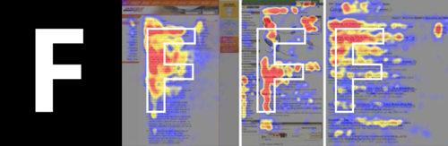
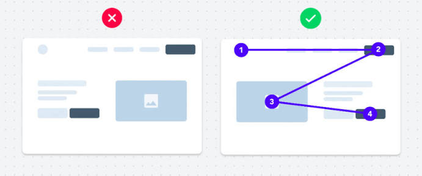

В прошлом уроке мы говорили про логику интерфейса. Но интерфейс не только «работает» — он ещё и производит впечатление за доли секунды, ещё до того, как пользователь успел им воспользоваться. Сегодня — про эстетику: почему красивое воспринимается как более удобное, и как этим осознанно пользоваться, а не просто «на глаз».
План урока
- Эффект «красивое = удобное» (Aesthetic-Usability Effect)
- Визуальная иерархия
- Контраст — не только цветовой
- Баланс и ритм
- Белое пространство (White space) — не пустота, а инструмент
- Стиль как часть доверия к продукту
- Где граница между «красиво» и «функционально»
- Итог + домашнее задание
1. Эффект «красивое = удобное» (Aesthetic-Usability Effect)
Исследования (в частности, классическая работа Масааки Куросу и Каори Кашимура, 1995) показывают: пользователи воспринимают визуально привлекательные интерфейсы как более простые в использовании — даже если объективно юзабилити у них одинаковое. Красота создаёт кредит доверия: пользователь прощает мелкие неудобства, если продукт выглядит профессионально, и наоборот — не доверяет функциональному, но неряшливому интерфейсу.
📎 Источник: NN/g — Aesthetic-Usability Effect · The Aesthetic-Usability Effect: Why Good-Looking Designs Feel Easier to Use
Важная оговорка: это не индульгенция на плохой UX под красивой обёрткой — эффект работает на первое впечатление и лояльность, но не спасает от реальных проблем с задачами пользователя в долгосрочной перспективе.
2. Визуальная иерархия

Визуальная иерархия — порядок, в котором глаз считывает элементы на экране, управляемый размером, весом (жирностью), цветом и положением. Хорошая иерархия отвечает на вопрос «куда смотреть в первую очередь» без раздумий.

Практика: на экране должен быть один явный визуальный «якорь» — самый крупный/контрастный элемент, к которому в первую очередь идёт взгляд (обычно это заголовок или основное действие), а всё остальное — по убыванию значимости.
3. Контраст — не только цветовой
Контраст — это разница между элементами, которая помогает их различать и расставлять приоритеты. Контраст бывает не только цветовым (тёмное на светлом), но и:
- по размеру — крупный заголовок против мелкого текста;
- по форме — круглая кнопка среди прямоугольных карточек сразу привлекает внимание;
- по плотности — компактный блок среди «воздушного» пространства.
Контраст цвета важен и с точки зрения доступности: минимальное соотношение контраста текста к фону по WCAG — 4.5:1 для обычного текста и 3:1 для крупного. Это не «эстетическая рекомендация», а требование доступности, которое стоит проверять инструментом, а не на глаз.
📎 Источник: WebAIM — Contrast Checker · WCAG 2.1 — Contrast Minimum
4. Баланс и ритм
Баланс — распределение визуального веса на экране так, чтобы он не «заваливался» в одну сторону. Не обязательно симметрично — асимметричный баланс (крупный элемент слева уравновешен группой мелких справа) часто выглядит динамичнее строгой симметрии.
Ритм — повторение и вариация элементов через равные (или осознанно неравные) промежутки — та самая система отступов из урока про автолейаут (4/8/16/24...) создаёт визуальный ритм на уровне всего продукта, а не только одного экрана.
Обязательно к прочтению по теме:
1) Как комбинировать ритмы колоночных сеток?
2) Что такое модульная вёрстка?
3) Как собрать страницу из модулей: зачем нужна сетка?
4) Как собрать страницу из модулей: без иллюстраций
5) Как собрать страницу из модулей: с иллюстрациями
5. Белое пространство (White space) — не пустота, а инструмент
Белое (свободное) пространство — не «неиспользованная территория», а активный инструмент дизайна: оно даёт контенту дышать, разделяет смысловые группы без явных линий и рамок, снижает когнитивную нагрузку. Продукты, которые воспринимаются как «премиальные» (Apple — классический пример), почти всегда используют больше свободного пространства, чем кажется интуитивно необходимым.
Практический тест: если хочется «отделить» два блока — сначала попробуйте увеличить расстояние между ними, и только если это не помогает — добавляйте разделительную линию.
6. Стиль как часть доверия к продукту
Единый стиль (шрифты, цвета, форма кнопок, иконки одного визуального языка) сигнализирует пользователю: «над этим продуктом кто-то думал системно, ему можно доверить свои данные / деньги / время». Разнобой — наоборот, подсознательно читается как небрежность, даже если пользователь не может явно сформулировать, что именно его смущает.
Это особенно критично в чувствительных сценариях — финансы, медицина, юридические сервисы: там визуальная небрежность напрямую снижает доверие и конверсию, это подтверждено множеством UX-исследований на бою во многих компаниях.
Для насмотренности, советую посмотреть хотя бы на крутые брендбуки, попытаться считать какими мы воспринимаем эти компании икакие эмоции у нас вызывают их продукты:
1) Брендбук Авиасейлс
2) Айдентика Контур
3) Айдентика Сбер
4) Редизайн брендбука Яндекс Клауд
5) Брендинг Додо пицца
6) Редизайн бренд-вижена Xsolla
7) Редизайн айдентики Яндекс Музыки
8) Айдентика Discord
7. Где граница между «красиво» и «функционально»
Эстетика не должна вступать в противоречие с юзабилити — если ради красивого минимализма убрали подписи у иконок и пользователь теряется, это красота ценой функции, и это плохой компромисс. Хороший стиль всегда работает на задачу пользователя, а не вместо неё. Правило: если сомневаетесь между «красивее» и «понятнее» — выбирайте понятнее, но ищите способ сделать понятное ещё и красивым, а не наоборот.
Итог урока
Сегодня разобрали, почему красота — это не украшательство, а часть юзабилити и доверия: иерархия, контраст, баланс, ритм и белое пространство работают на восприятие интерфейса ещё до того, как пользователь начал им пользоваться. В следующем уроке — переходим от эстетики к людям: как понять, чего на самом деле хочет пользователь.
Домашнее задание:
- Найти два скриншота одного и того же типа экрана (например, форма регистрации) из разных продуктов — один «прибранный», другой «шумный» — и разобрать разницу по пунктам: иерархия, контраст, баланс, white space.
- Проверить контраст текста на своём макете инструментом WebAIM Contrast Checker.
- Переработать один свой экран, увеличив расстояния между смысловыми блоками вместо добавления разделительных линий.
Полезные материалы
- Азбука дизайна: главные принципы и законы (Илья в Tilda Education)
- Композиция в дизайне (Илья в Tilda Education)
- Стили в веб-дизайне (Илья в Tilda Education)
- Принципы дизайна: как работает дизайн (Оди)
- 13 фундаментальных принципов дизайна (Дизайнерс)